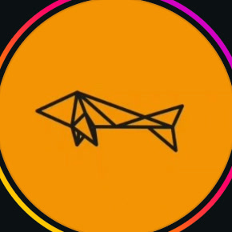

Biolink, site, cardápio e reserva em um lugar só, com a sua marca e os dados dos seus clientes na sua mão.
O link da bio é um Linktree. Antes de abrir, o visitante vê um anúncio de terceiros e uma contagem regressiva.
Cardápio e delivery vivem em plataformas diferentes, ambas fora do seu domínio.
Reserva só por telefone e WhatsApp, sem agenda online que confirme sozinha.
Cada plataforma intermediária é um lugar onde o cliente desiste, vê o anúncio de outro e deixa dados que não ficam com você.
Um sistema único: o biolink leva ao site, o site leva à reserva e ao cardápio, e o pedido chega direto ao seu WhatsApp. Sem anúncio de outra marca no caminho.
O que você vê aqui é uma demonstração com a cara da casa. O sistema final é desenhado sob medida, com as funções que Zaiko Sushi precisar.

Zaiko SushiCardápio Reservas Pedir ContatoDEMONSTRAÇÃO · Fotos e logo tirados do Instagram da casa só para ilustrar. O sistema final é desenhado sob medida, com as funções que a casa precisar.
por mês deixam de ir para comissão
por ano
Exemplo ilustrativo. Na reunião, refazemos a conta com os números reais de Zaiko Sushi.
Quem quer largar o Linktree e ter cardápio e links próprios, rápido.
Quem quer um canal direto de verdade: reserva, cardápio e pedido no próprio site.
Casas que querem uma presença à altura do que servem à mesa.
Valores de referência, em reais: o escopo e o preço finais são ajustados ao que a casa precisa. Mensalidade inclui hospedagem, domínio, suporte e pequenas atualizações. Mídia paga e taxas de meios de pagamento não estão incluídas.
Conversamos, mostramos como ficaria o biolink e o site da casa e você decide com calma.